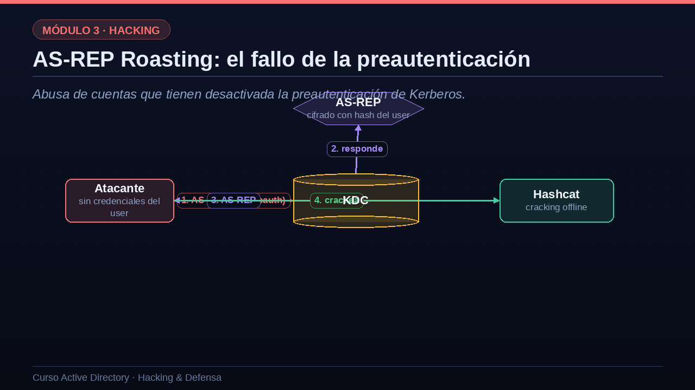
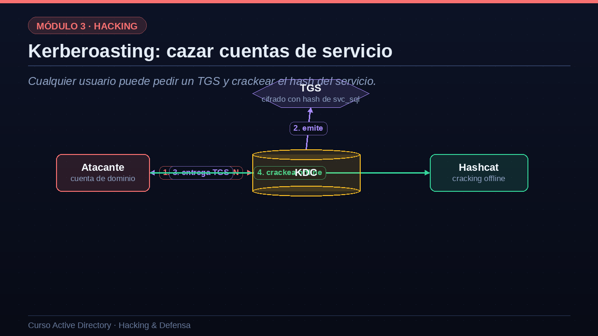

01AS-REP Roasting: el fallo de la preautenticación
Abusa de cuentas que tienen desactivada la preautenticación de Kerberos.
Empecemos por el AS-REP Roasting. Recuerda de la lección de Kerberos que, normalmente, para pedir un TGT hay que preautenticarse: enviar un timestamp cifrado con tu contraseña. Pero algunas cuentas tienen esa preautenticación desactivada, a veces por compatibilidad con sistemas antiguos. Y ahí está el fallo. Paso uno: el atacante pide un TGT para esa cuenta vulnerable, sin preautenticarse, es decir sin conocer su contraseña. Paso dos: como la cuenta no exige preautenticación, el KDC responde tan tranquilo. Paso tres: en esa respuesta, el AS-REP, viaja una parte cifrada con el hash de la contraseña de la víctima. Paso cuatro: el atacante se lleva ese material a casa y lo crackea offline con Hashcat. Si la contraseña es débil, la recupera. Lo peligroso es que el atacante no necesitaba conocer la contraseña de la víctima para empezar: le bastaba con saber que esa cuenta existía y era vulnerable.

02AS-REP Roasting en la práctica
Veámoslo con comandos reales. Con el script GetNPUsers de Impacket, le pasamos una lista de usuarios y la opción no guion pass, que significa sin contraseña. La herramienta pregunta al KDC por cada uno. Para la mayoría, como carlos, el KDC responde que exige preautenticación, así que están protegidos. Pero para la cuenta legacy, una cuenta antigua con la preautenticación desactivada, obtenemos su AS-REP: ese hash que empieza por krb5asrep. Acto seguido se lo pasamos a Hashcat con el modo dieciocho mil doscientos, junto a un diccionario como el famoso rockyou. Como la contraseña era débil, Primavera dos mil veintitrés, la recuperamos en segundos. Ya tenemos una credencial válida más del dominio, y todo el cracking se hizo offline, sin tocar la red de la víctima.
# Buscar cuentas sin preautenticación y pedir su AS-REP GetNPUsers.py empresa.local/ -usersfile users.txt -no-pass [-] carlos: KDC_ERR_PREAUTH_REQUIRED (protegido) $krb5asrep$23$legacy@EMPRESA.LOCAL:a1b2...f9 (vulnerable) hashcat -m 18200 asrep.txt rockyou.txt legacy : Primavera2023 (contraseña recuperada)
03Kerberoasting: cazar cuentas de servicio
Cualquier usuario puede pedir un TGS y crackear el hash del servicio.
Pasemos al Kerberoasting, probablemente el ataque más característico de AD. Recuerda que, en la segunda fase de Kerberos, cuando pides un ticket de servicio, el KDC te lo entrega cifrado con el hash de la cuenta que ejecuta ese servicio. Y aquí está la clave: cualquier usuario del dominio puede pedir un ticket para cualquier servicio con SPN. Paso uno: el atacante, con su cuenta normal, pide al KDC un ticket de servicio para el SPN de, por ejemplo, el servidor SQL, cuya cuenta es svc guion sql. Paso dos: el KDC emite el ticket, sin sospechar nada, porque es una petición totalmente legítima. Paso tres: se lo entrega al atacante. Paso cuatro: ese ticket va cifrado con el hash de svc guion sql, así que el atacante se lo lleva y lo crackea offline. Si la cuenta de servicio tiene una contraseña débil, cosa muy habitual, recupera su clave en claro. Y las cuentas de servicio suelen tener privilegios altos.

04Kerberoasting en la práctica
Veamos el Kerberoasting con comandos. Con el script GetUserSPNs de Impacket, usando nuestra cuenta de dominio y la opción request, pedimos los tickets de todas las cuentas que tienen SPN. La herramienta nos lista los servicios y, fíjate en algo inquietante, nos muestra a qué grupos pertenece cada cuenta: svc guion sql está nada menos que en Domain Admins. Obtenemos su ticket, ese hash que empieza por krb5tgs, y se lo pasamos a Hashcat con el modo trece mil cien y un diccionario. La contraseña, Verano dos mil veinticuatro con admiración, era débil y cae enseguida. Y como esa cuenta de servicio es administradora de dominio, acabamos de pasar de un usuario normal a controlar todo el dominio con un único ataque. Este escenario, una cuenta de servicio con contraseña débil y privilegios excesivos, es dolorosamente frecuente en empresas reales.
# Listar SPN y pedir sus tickets de servicio GetUserSPNs.py empresa.local/ana:'Passw0rd' -request ServicePrincipalName Name MemberOf MSSQL/srv-sql:1433 svc_sql Domain Admins $krb5tgs$23$*svc_sql*$e3f...a9c hashcat -m 13100 tgs.txt rockyou.txt svc_sql : Verano2024! -> ¡y es Domain Admin!
05Cómo defenderse de ambos ataques
Vamos con la defensa, que en ambos casos es muy concreta. Contra el AS-REP Roasting, la medida principal es no desactivar la preautenticación salvo necesidad absoluta, y auditar periódicamente qué cuentas la tienen apagada para corregirlas. Y, como en todo cracking, unas contraseñas fuertes hacen el ataque inútil: si no hay contraseña débil, no hay nada que recuperar. Contra el Kerberoasting, la solución reina son las cuentas gMSA, cuya contraseña de más de cien caracteres generada y rotada por el sistema es, en la práctica, imposible de crackear. Igual de importante es aplicar mínimos privilegios: una cuenta de servicio jamás debería ser administradora de dominio. Y en el lado de la detección, hay una señal valiosísima: el evento cuatro mil setecientos sesenta y nueve, que registra las peticiones de tickets de servicio; cuando llegan muchas usando el cifrado débil RC4, es un indicio claro de Kerberoasting en curso.
Contra AS-REP Roasting
- Exigir preautenticaciónNo desactivarla salvo necesidad absoluta; auditar quién la tiene.
- Contraseñas fuertesSi no hay contraseña débil, no hay cracking.
Contra Kerberoasting
- gMSAContraseñas de 120+ caracteres, imposibles de crackear.
- Menos privilegiosUna cuenta de servicio nunca debería ser Domain Admin.
- DetecciónEvento 4769 con cifrado RC4 = posible ataque.
06Resumen de la lección
Recapitulemos. Lo más importante de estos dos ataques es que parten de una simple cuenta de dominio, sin privilegios. El AS-REP Roasting explota las cuentas que tienen desactivada la preautenticación, obteniendo material cifrado crackeable offline. El Kerberoasting aprovecha que cualquier usuario puede pedir tickets de servicio, que vienen cifrados con el hash de la cuenta de servicio, a menudo con contraseña débil y privilegios altos. La defensa pasa por exigir la preautenticación, usar gMSA, aplicar mínimos privilegios a las cuentas de servicio y vigilar el evento cuatro mil setecientos sesenta y nueve con cifrado RC4. En la próxima lección atacaremos las credenciales directamente, con NTLM, Pass-the-Hash y Pass-the-Ticket. Nos vemos en la lección diez.
- Solo hace falta una cuenta de dominioAmbos ataques parten de un usuario sin privilegios.
- AS-REP RoastingCuentas sin preautenticación entregan material crackeable.
- KerberoastingCualquiera pide tickets de servicio y crackea la cuenta de servicio.
- DefensaPreautenticación, gMSA, mínimos privilegios y vigilar RC4 (4769).